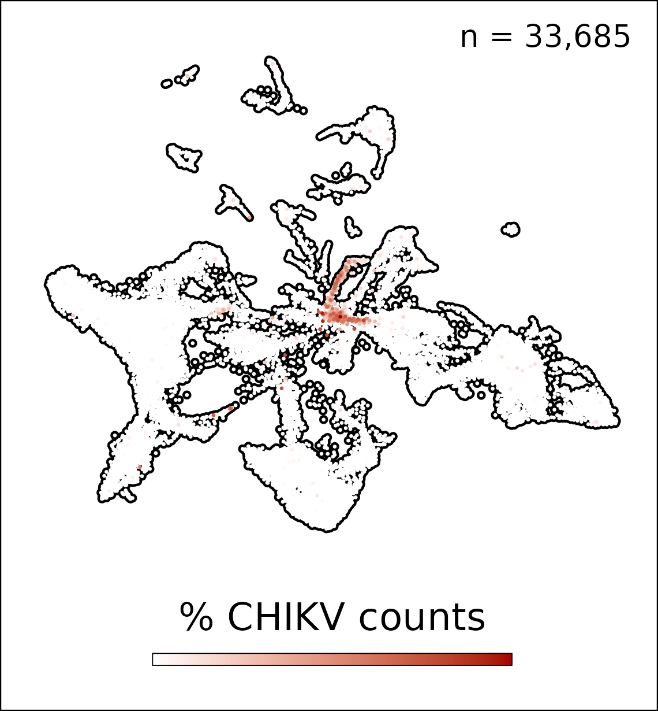
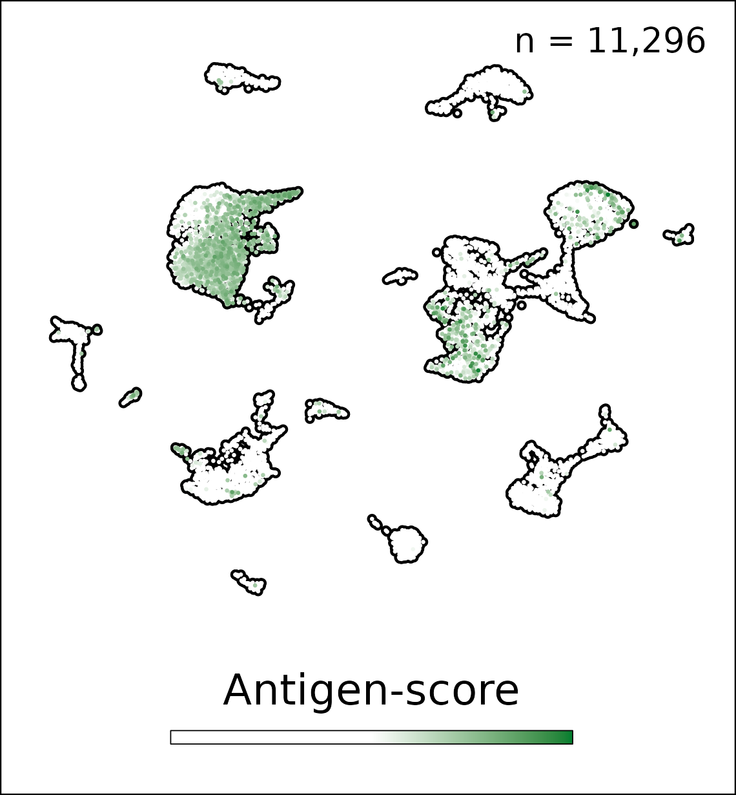
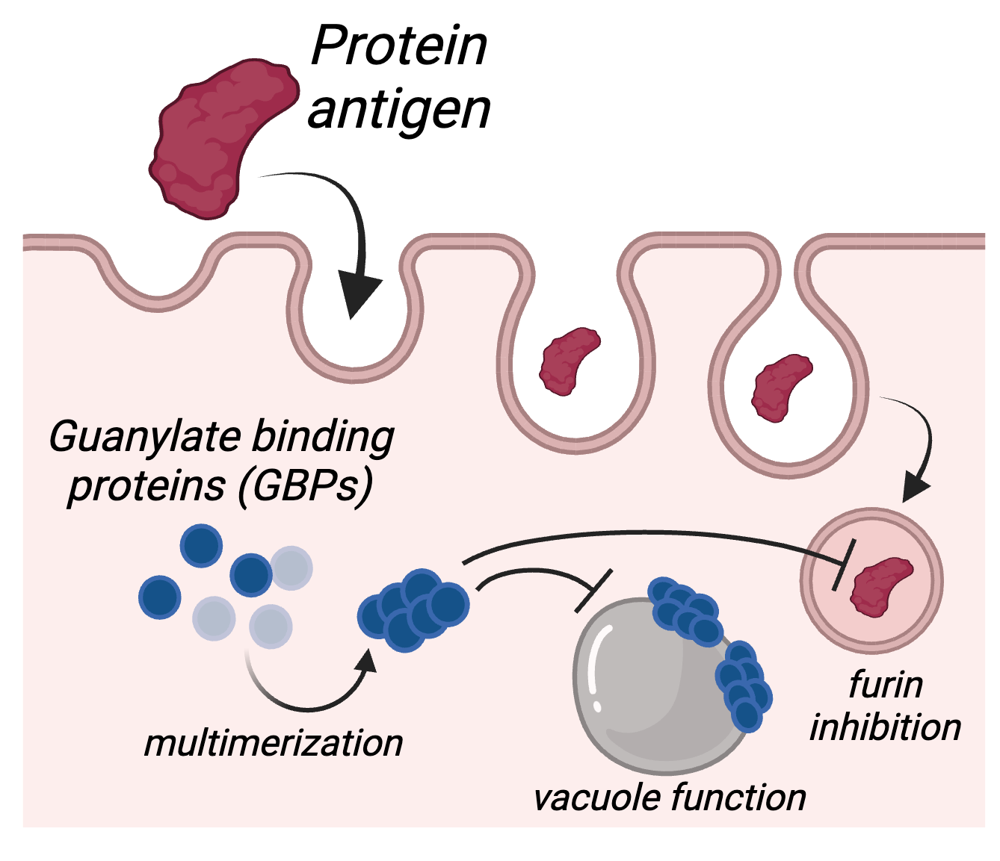

Projects
Define protective and pathogenic roles of LNSCs during viral infection
Thomas Morrison, PhD Publications
We hypothesize that inflammatory responses, cell trafficking, and development of protective adaptive immune responses are regulated by discrete populations of LNSCs during viral infection
 Project 1 will define how viral targeting of distinct LNSCs regulates viral dissemination, LN organization and inflammation, and development of adaptive immunity. Project 1 and Project 2 will establish how viral targeting of LNSCs impacts antigen archiving and immune memory to archived antigens. Finally, Project 1 coordinates with Project 3 to study how isotype-specific immune complexes (ICs) promote chronic viral infection of follicular dendritic cells (FDCs). This project will use novel mouse models and human tissues and advanced spatial and single-cell RNA approaches. This project will define how LNSCs shape antiviral immune responses and how viruses manipulate LNSCs to evade immunity.
Identify mechanisms of vaccine antigen localization and retention by LNSCs that drive and enhance cellular and humoral immunity
Beth Tamburini, PhD Publications Atlases
We hypothesize that LNSC targeting improves and extends the cellular and humoral responses required for vaccine mediated immunity
 Project 2 will work with Project 3 to define mechanisms of vaccine antigen acquisition and retention by different LNSCs. Project 2 will work with Projects 1 and 3 to determine if manipulation of antigen duration in LNSCs improves vaccine protection against arboviruses and influenza virus. Finally, Project 2 will work with Project 1 to define the consequences of virus induced cell death on LEC “training” and the impact on vaccine immunity. This project will distinguish functions of specific LNSC populations and create novel vaccine strategies (e.g., mRNA, virus-like particles, and lipid nanoparticles) and apply sophisticated spatial and single-cell transcriptomic approaches to evaluate antigen levels within infrequent and transcriptionally defined LNSC subsets. This project will determine how specific LNSC subsets shape vaccine immunity and the consequences of viral infection of LNSCs to vaccine immunity.
Investigate the role of immune complexes in antigen acquisition and retention by LNSCs to modulate cellular and humoral immunity
We hypothesize that antibody isotype in an IC regulates protective immunity by determining which LNSC populations acquire and retain antigen via isotype-specific interactions with complement and Fc receptors (FcRs)
 Project 3 will engineer monoclonal antibodies (mAbs) with fixed antigen specificity on discrete antibody isotypes and subclasses. Using stabilized DNA conjugates, Projects 2 and 3 will track antibody:antigen complexes to determine the spatial and cellular localization of ICs in comparison with free antigen. Project 3 also investigates how FcR expression by LNSCs impacts IC acquisition and will work with Project 1 to determine viral antigen retention and define consequences to protective humoral and cellular immunity. This project will use mouse models engineered to manipulate complement receptor and FcR expression by discrete LNSC populations and will define how different LNSC populations use antibody to determine antigen uptake and localization.
Cores
Mouse transgenics and tissue characterization
Jennifer Matsuda, PhD Publications
The goal of the mouse transgenics and tissue core is to generate novel genetic mouse models and to develop a tissue and cell repository, this includes the following key tasks.
Task 1. Generation of novel mouse lines
Task 2. Provide a mouse colony for LNSC biology
Task 3. Provide a resource for maintenance and distribution of human and mouse LNSCs and lymphoid tissuesMolecular technologies
Jay Hesselberth, PhD Publications Atlases
The molecular technologies cores will apply new molecular tools to understand the contributions of lymph node stromal cells to immune responses, this includes the following key tasks.
Task 1. Generate validated reagents for and execute single-cell and spatial transcriptomic experiments to probe LNSC biology
Task 2. Production of customized lipid nanoparticles with mRNA and siRNA cargo
Task 3. Expression and purification of antibodies, antigens, and immune complexesBioinformatics
Jay Hesselberth, PhD Ryan Sheridan, PhD Publications Atlases
The bioinformatics core will apply new informatics approaches to understand the contributions of LNSCs to immune responses, this includes the following tasks.
Task 1. Provide a bioinformatics resource for rigorous and reproducible analysis of sequencing experiments
Task 2. Develop pipelines for large scale meta-analysis of single-cell and spatial transcriptomic data
Task 3. Curate a public-facing LNSC atlas to allow for interactive exploration of published datasets